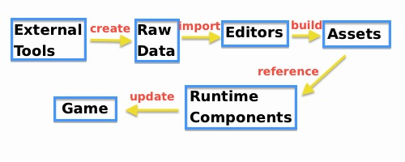
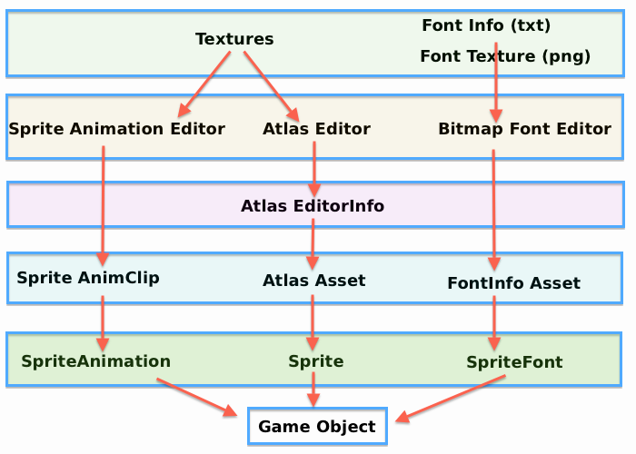

The ex2D Unity extension consists of 4 parts: Assets, Editors, Runtime Components and External Tools. These 4 parts compose the ex2D working pipeline in Unity, as displayed in the picture above.
Phase 1: Create raw data in External Tools
Some assets are really easy to create and edit in external tools. For example textures, fonts and 2d skeleton/skinning animations. So in this phase we just use external tools to process data and import them into Unity editor.
ex2D use BMFont(Windows) and Hiero(Mac) to generate bitmap font data, and in the near future we will add other external tools developed by exDev Studio into the pipeline.
Phase 2: Import and Edit Raw Data in Editor
ex2D provides several editor classes inside Unity for assets editing, including Atlas Editor, Sprite Animation Clip Editor, Atlas Font Editor… These tools will be used in Phase 2 of our working pipeline. They all have a similar purpose: handle the Raw Data come from the Phase 1, and provide interface to adjust them to fit the project.
Phase 3: Build and store the Assets for game
Once you have finished assets editing in ex2D editors, your changes will be saved automatically in the project. Some assets will be built/rebuilt while saving. During a building process, ex2D will drop unnecessary data in the assets, and the final game build will be clean and minimum in size. For example the atlas will not reference original texture files after build, and sprite animation will reference sprites from atlas.
Phase 4: Reference assets in the scene
We have created and imported our assets in the previous phases. Now we need to use these assets. Think about other runtime Behavior/Components in Unity. Just like MeshFilter(component) needs Mesh(asset), Renderer(component) needs Material(asset), our Atlas asset will be used by Sprite Component, Sprite Animation Clip will be used by Sprite Animation Component, etc. With the help of ex2D, you can reference all the 2D assets easily and smoothly in your prefabs and scripts (just like using any other native Unity assets and components), making the whole process from design to making playable game build really fast and comfortable.
